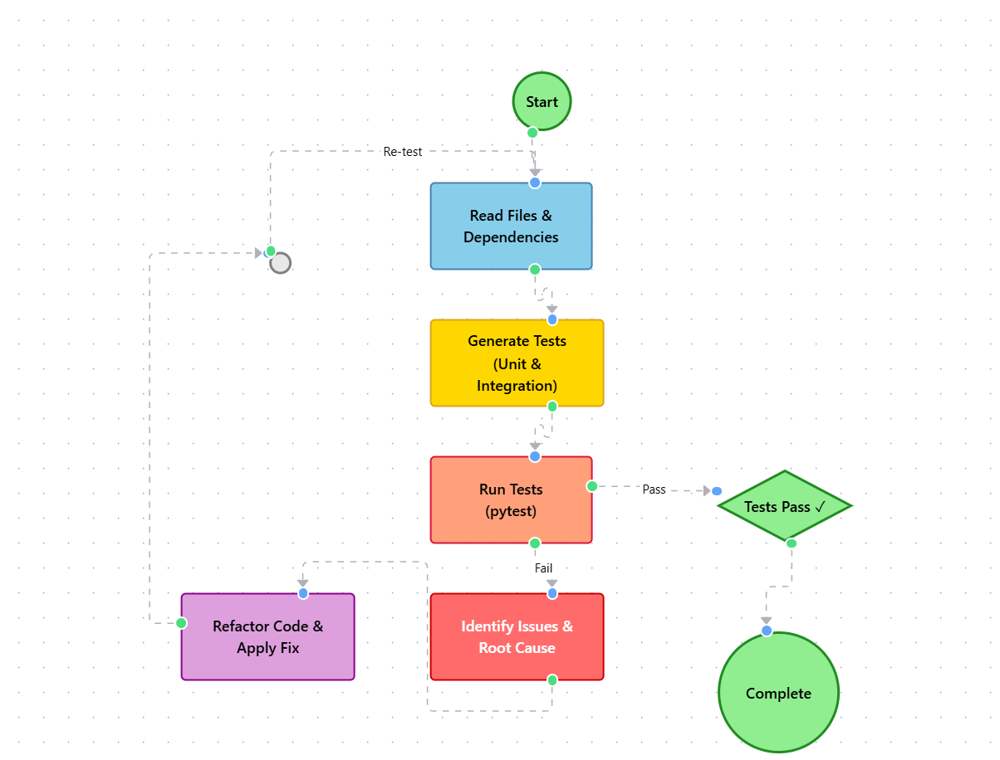
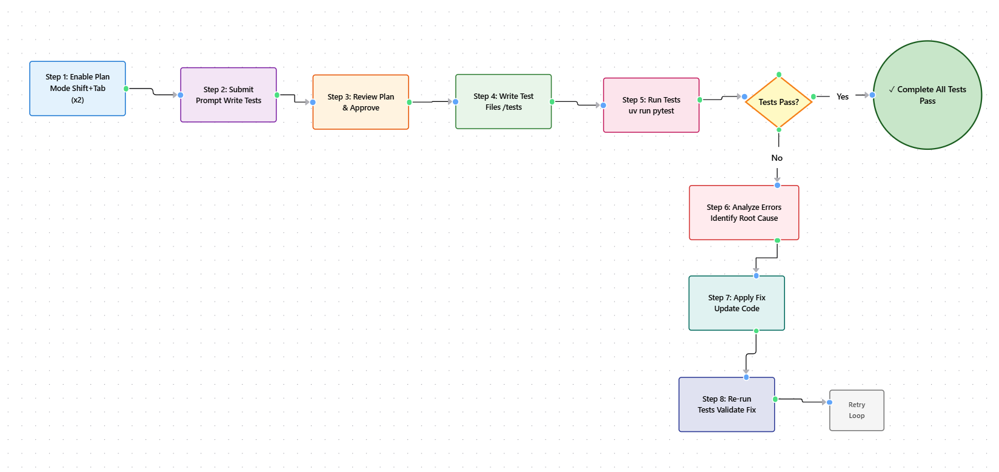

Module 1 — Episode 5
Training:Claude Code - A Highly Agentic Coding Assistant
Course Level: Intermediate → Advanced
🎯 What You'll Learn
By the end of this episode, you will:
- ✅ Use Claude Code to write and run automated tests for complex AI systems
- ✅ Apply structured debugging workflows using test-driven prompts
- ✅ Perform multi-agent code refactoring with parallel planning and plan mode
- ✅ Build a robust, test-backed development foundation for RAG-based applications
🧭 Quick Overview
The Big Picture:This episode demonstrates how Claude Code can serve as a full-stack debugging partner—writing tests, identifying errors, and refactoring code autonomously. You’ll see how to use plan mode, subagents, and iterative tool calls to stabilize and evolve a Retrieval-Augmented Generation (RAG) chatbot.
What Problem Does This Solve?- Developers often rely on trial-and-error debugging instead of reproducible tests
- Complex RAG pipelines hide errors across multiple files and components
- Manual refactoring introduces regressions without adequate test coverage
- Debugging production AI pipelines (e.g., RAG systems, LLM orchestration)
- Refactoring backend logic for multi-tool workflows
- Creating regression-safe environments for continuous Claude Code development
🧱 Prerequisites & Background
You should already know:- How to navigate and edit files with Claude Code
- How to use Plan Mode for reviewing Claude’s reasoning
- Fundamentals of pytest and Python module testing
🔑 Core Concepts Explained
Concept 1: Test-Driven Debugging with Claude Code
Definition:A workflow where Claude automatically writes, runs, and interprets tests to localize and fix bugs.
Why It Matters:It turns debugging into a reproducible, automated process instead of ad-hoc guesswork.
When To Use:When errors appear across multiple files or when you need confidence before refactoring.
Concept 2: Plan Mode for Controlled Execution
Definition:A mode (activated via Shift+Tab twice) where Claude reveals its full plan before execution.
You can review and approve test-writing or refactoring strategies before changes occur.
When To Use:For multi-file edits, test generation, or major backend refactors.
Concept 3: Multi-Agent Refactoring
Definition:A Claude Code feature where multiple subagents brainstorm parallel solutions before implementation.
Why It Matters:It allows developers to compare multiple refactor strategies (e.g., iterative vs recursive) safely.
When To Use:For uncertain or complex architectural changes where trade-offs exist.
🖼 Architecture & Flow Diagrams
System Overview
 What This Shows:Claude Code acts as a continuous agentic loop—reading files, generating tests, running them, identifying issues, and refactoring safely.
Debugging Workflow Sequence
 Key Takeaway:Claude Code can autonomously complete the full test-debug-fix loop with human oversight.
⚙️ Technical Deep Dive
Phase 1: Setup & Initialization
1. Open Claude Code in your project directory
2. Enable Plan Mode (Shift+Tab twice)
3. Prompt Claude:
claude "Write pytest unit and integration tests for AIGenerator, rag_system.py, and search_tools.py"
4. Approve the plan before execution
Phase 2: Execution & Processing
- Claude reads target files and identifies dependencies
- Mocks external services (e.g., ChromaDB)
- Writes test scaffolds under
/tests - Runs tests using:
uv run pytest
- Detects failure in RAG pipeline (
MAX_RESULTS=0)
Phase 3: Output & Integration
- Claude proposes a fix (update
MAX_RESULTSconfiguration) - Applies patch and re-runs tests
- Reports passing results and summarizes changes
- Optionally continues into refactoring phase for multi-tool support
Why This Design Works
Underlying Principles:- Test-first debugging ensures reproducibility
- Plan Mode provides transparency and control
- Parallel subagents explore multiple refactor paths safely
- No code changes occur without developer approval
- All fixes validated by automated tests
- Backward compatibility preserved unless explicitly changed
✅ When To Use This Feature
Ideal Use Cases
✅ Perfect For:- Debugging RAG or LLM orchestration pipelines
- Refactoring backend AI logic
- Expanding test coverage with minimal manual effort
- 3–5× faster debugging cycles
- Automated regression prevention
- Reduced cognitive load on complex systems
Anti-Patterns: When NOT To Use
❌ Avoid When:- Working on trivial scripts (manual debugging is faster)
- You lack testable entry points (e.g., missing modular design)
- Skipping Plan Mode → unexpected file edits
- Ignoring test failures → false confidence
- Forgetting dependency installation (
pytest,uv, etc.)
🔧 Practical Implementation Guide
Step 1: Install Dependencies
uv pip install pytest
Installs the testing framework used by Claude Code for automated debugging.
Step 2: Generate Tests
claude "Write pytest tests for ai_generator.py, rag_system.py, and search_tools.py"
/tests/test_ai_generator.py/tests/test_rag_system.py/tests/test_search_tools.py
Step 3: Run Tests
uv run pytest
FAILED test_rag_system.py::test_vector_search - AssertionError: MAX_RESULTS=0
Step 4: Apply Fix
Claude identifies MAX_RESULTS = 0 as root cause and updates configuration.
Re-run tests → all pass ✅
Step 5: Refactor for Multi-Tool Support
claude "Refactor ai_generator.py to support multiple tool calls per query"
Claude dispatches two subagents:
- Option A: Iterative tool calling (simpler, safer)
- Option B: Recursive multi-round logic (more flexible)
Select and approve desired plan.
💡 Practical Tips & Tricks
Pro Tip 1: Always Use Plan Mode for Multi-File Changes
The Technique:Enable Plan Mode before any large-scale test or refactor operation.
When to Use It:Whenever Claude edits multiple files or proposes structural changes.
Pro Tip 2: Use Parallel Subagents for Design Exploration
The Technique:Ask Claude to “dispatch two subagents to brainstorm refactor options.”
When to Use It:When you’re uncertain about the optimal architecture.
Pro Tip 3: Validate Behavior, Not Implementation
The Technique:Write tests for external behavior instead of internal states.
When to Use It:During refactors to ensure backward compatibility.
🚀 Real-World Examples
Example 1: Debugging a RAG Chatbot
Context:Chatbot queries fail unexpectedly.
Challenge:Identify root cause across multiple modules.
Claude Code Approach:claude "Write pytest tests for rag_system.py and ai_generator.py"
uv run pytest
Claude finds MAX_RESULTS=0, fixes it, re-runs tests, and restores chatbot function.
Example 2: Refactoring Tool Logic
Context:Backend only supports one tool call per query.
Challenge:Enable multi-round reasoning.
Claude Code Approach:claude "Refactor ai_generator.py to support two tool calls per query"
Claude generates iterative logic for multi-tool execution and verifies with tests.
🤔 Common Questions & Troubleshooting
Q: Why are my tests failing after Claude’s fix?
A: Check dependency versions and mocks. Runuv pip install -r requirements.txt to sync environments.
Q: How do I stop Claude mid-execution?
A: PressCtrl+C or disable auto-accept to manually approve each step.
Q: How can I see what Claude plans to change?
A: Enable Plan Mode (Shift+Tab twice) before running the command.
📊 Performance & Optimization
Context Window Management
- Context Cost: Medium (reads multiple files + test output)
- Optimization Strategy: Use file-specific prompts
- When To Compact: After major refactor completion
Speed Optimization
- Use
uvfor faster dependency installs - Limit test scope with
pytest -k "target_test"
Cost Considerations
- Moderate token usage (multi-file read + test generation)
- Reduce cost by summarizing logs before re-prompting
🔗 Related Topics & Next Steps
You Should Also Learn About:- Episode 6: Parallel Sessions and Git Worktrees
- Episode 4: Automating Feature Development with Claude Code
- Episode 3: Plan Mode and Controlled Execution
📌 Key Takeaways
1. Claude Code can autonomously test and debug — treat it like a continuous integration assistant.
2. Plan Mode is your safety net — always review before execution.
3. Parallel subagents expand creativity — compare multiple refactor paths.
4. Test-driven workflows = long-term stability — every fix becomes a safeguard.
🎓 Quick Reference
Command Cheat Sheet
| Purpose | Command | When to Use |
|---|---|---|
| Generate tests | claude "Write pytest tests for |
When adding test coverage |
| Run tests | uv run pytest |
Validate code changes |
| Enable plan mode | Shift+Tab (twice) |
Review Claude’s plan |
| Dispatch subagents | claude "Dispatch two subagents to brainstorm options" |
Multi-strategy refactors |
Keyboard Shortcuts
Shift+Tab– Toggle Plan ModeCtrl+C– Interrupt executionEnter– Approve next step
Common Prompts
"Write pytest tests for ai_generator.py and identify potential failure points."
"Refactor backend to support multiple tool calls per query."
"Dispatch two subagents to propose refactor options."
🔐 Security & Best Practices
Privacy Considerations:- Only send non-sensitive code to Claude
- Keep secrets (API keys, credentials) excluded from context
- Always run tests locally before merging changes
- Validate Claude’s output against existing CI pipelines
- Store Claude-generated test plans in
CLAUDE.md - Share refactor strategies via version control branches
📚 Extra Resources
Official Documentation: Recommended Tools:uvfor Python dependency managementpytest-covfor coverage reports
⭐ Conclusion
What You've Mastered:- Test-driven debugging and refactoring with Claude Code
- Safe, transparent plan-based execution
- Multi-agent reasoning for complex backend improvements
You’ve learned to transform Claude from a reactive assistant into a proactive engineering partner capable of maintaining and evolving production systems.
Your Next Challenge:Implement continuous testing and refactoring pipelines using Claude Code in your own project.
Pro Tip for Long-Term Mastery:Treat every debugging session as an opportunity to expand your automated test suite — Claude will thank you later.